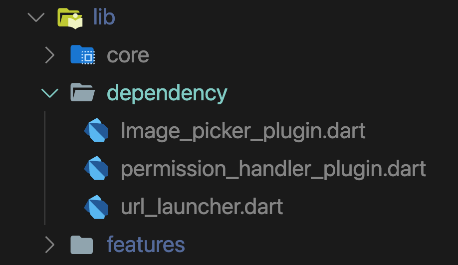

- Package : A package is a piece of software that adds capabilities to the Flutter app.
- Dart packages : General packages written in Dart, contain Flutter specific functionality and thus have a dependency on the Flutter framework.
- Plugin packages : A specialized Dart package that contains an API written in Dart code combined with one or more platform-specific implementations.
To get Dart packages, you can use the pub.dev site, or load packages from the local file system or elsewhere, such as Git repositories. Between different options for a specific package, we should select the one that confirms below list.
- High overall package score
- Prefer permissive license
- Verified publisher
- High quality dependencies
- Reputation of publisher
- GitHub version tag matches the current version from pub.dev
- Feature completeness—and not marked as incomplete
- General usability when it comes to the overview, docs, sample/example code, and API quality
- Good runtime behavior in terms of CPU and memory usage

All packages should be in the dependency directory. usually, the usage of package functionality is in Domain Layer within business logic, imagine for any reason in future we want to swap the package for something different. If we used it directly inside the Usecase we would need to change a lot of code. But by hiding 3rd party library in a class we control, there won't much code to change. So we should wrap package functionality with a class that is inherited from ExternalDependency.
import 'package:clean_framework/clean_framework.dart';
import 'package:permission_handler/permission_handler.dart';
class PermissionHandlerPlugin extends ExternalDependency {
Future<bool> isGrantedAccessCamera() async {
var status = await Permission.camera.status;
if (status.isGranted) {
return true;
} else {
var reqStatus = await Permission.camera.request();
return reqStatus.isGranted;
}
}
}
- In order to test the package functionality, we can check package repository, for permission handler packge we can find test file here.
- To test the usage of wraped class in app logic,
- Create a
Mockclass to cover package class - Override the method to return a mock value
class MockPermissionHandlerPlugin extends Mock implements PermissionHandlerPlugin { @override Future<bool> isGrantedAccessCamera() async { return true; } } - Initialize mock package and call the method on the use case of the plugin. we expect the method to run properly
class MockPermissionHandlerPlugin extends Mock implements PermissionHandlerPlugin {} - Create a